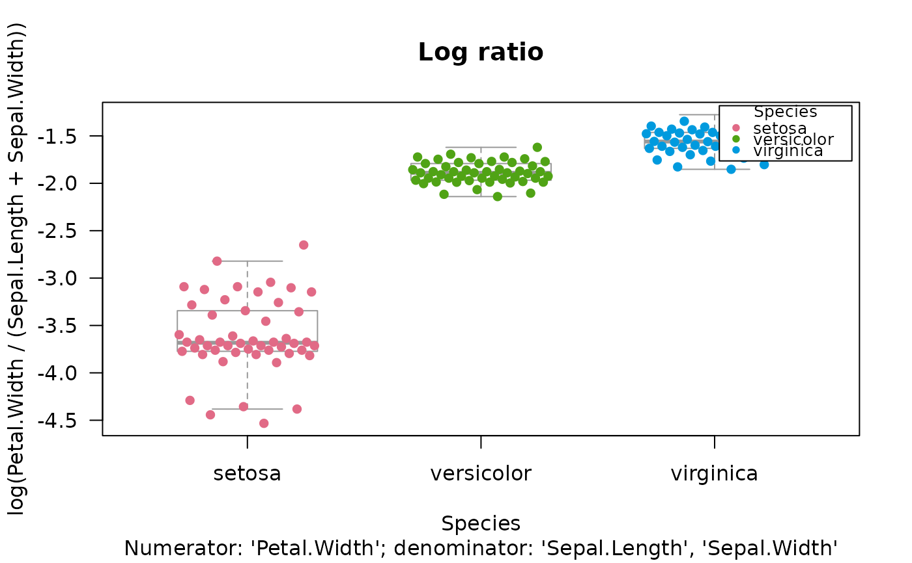
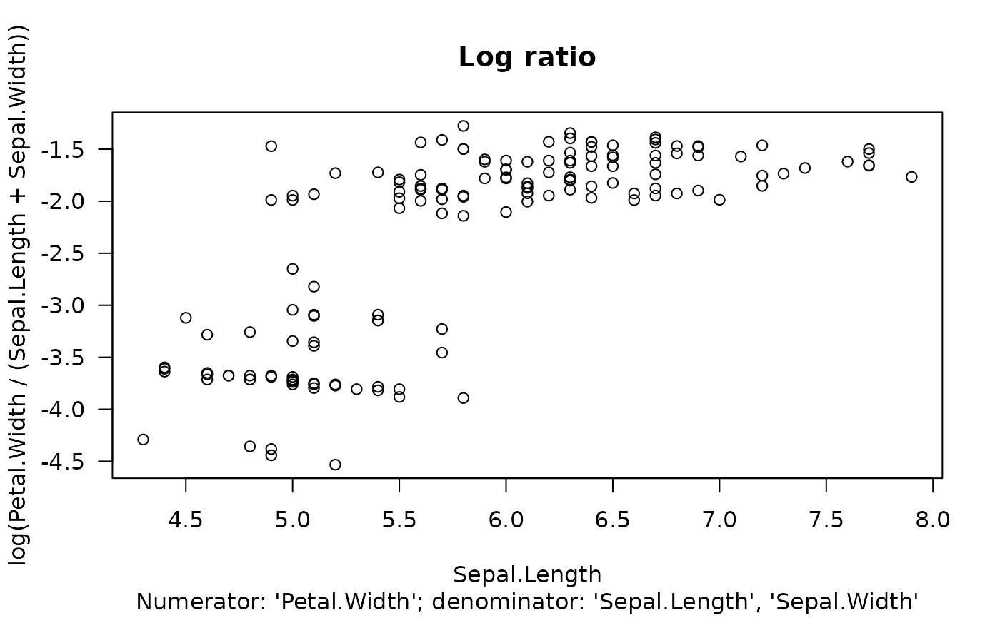
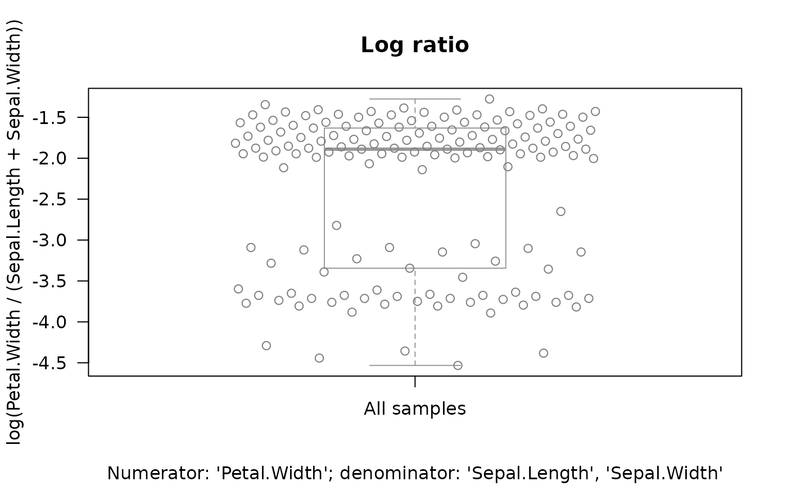
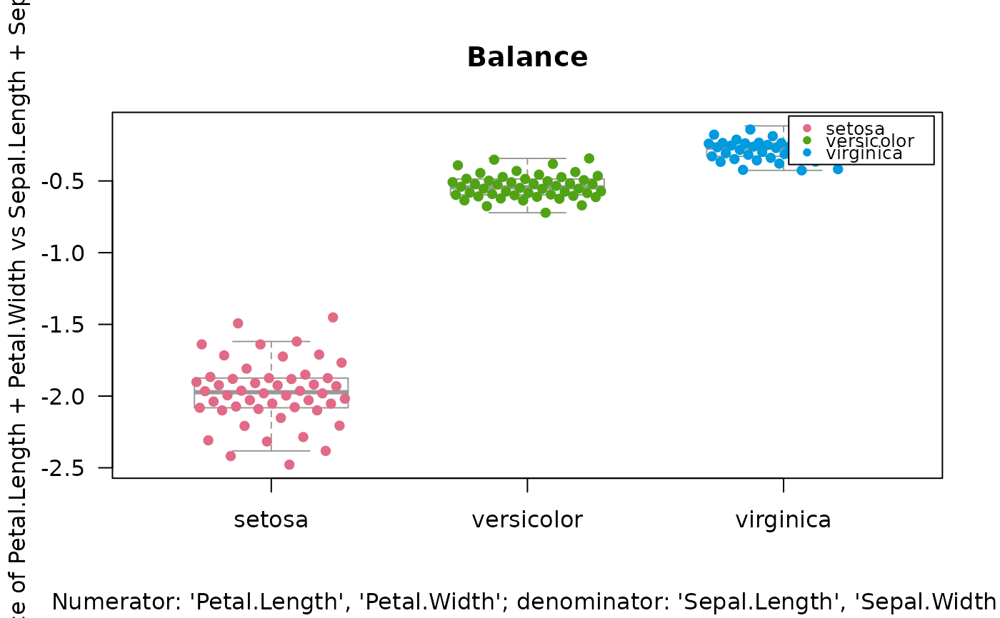

Plots the per-sample values of log_ratio() or balance(), as Qurro's
sample plot does (Fedarko et al. 2020): by group, as a box plot with the
samples drawn over it; against a numeric variable, as a scatter plot; or
with no groups, as one box of all the samples.
Usage
# S3 method for class 'ecodive_log_ratio'
plot(
x,
groups = NULL,
data = NULL,
legend = "topright",
col = NULL,
pch = NULL,
...
)Arguments
- x
The result of
log_ratio()orbalance().- groups
The samples' groups or a numeric variable: the name of a column of
data, or a vector with one value per sample (matched to the samples by name when both are named, as forplot.ecodive_ord()). A factor, character or logical vector gives a box per value (in the order of a factor's levels); a numeric vector puts the variable on the x axis. DefaultNULL: one box of all the samples.- data
A data frame of sample metadata, with one row per sample (matched by row name, else in order), when
groupsnames one of its columns.- legend
For groups: where to put the legend of the samples' colours, a keyword for
graphics::legend(), such as"topright"(the default), orNULLfor none.- col
The points' colours: with groups, one per group (in order, or named by group), as for
plot.ecodive_ord(); else for all the points.- pch
The points' symbols. Default
16(filled circles) with groups, else1.- ...
Passed on to
graphics::plot.default(), such asmain,sub,xlab,ylab,ylimorcex.
Details
The title is "Log ratio" or "Balance", from the result's method
attribute; the y axis label names the numerator's and the
denominator's features (up to three on each side, else their number),
as \(\log(N / D)\) for a log ratio; and the subtitle lists them (up to
five on each side).
Samples whose value is undefined (NA: a numerator or denominator that
sums to 0 in log_ratio(), a zero in a selected feature in balance()
with pseudocount = 0) are left out, as Qurro leaves them out, and
counted in the subtitle.
Within a box, the samples are spread sideways so that ties stay visible: the \(i\)th smallest of a group sits at \(0.6\,((0.618034\,i) \bmod 1 - 0.5)\) from the box's centre. The spread is fixed, so it doesn't use (or change) R's random number generator, and the same values are always drawn in the same places.
Nothing is fitted or tested: test the log ratio as any other per-sample
variable (see log_ratio()).
References
Fedarko, M. W., Martino, C., Morton, J. T., et al. (2020). Visualizing 'omic feature rankings and log-ratios using Qurro. NAR Genomics and Bioinformatics, 2, lqaa023. doi:10.1093/nargab/lqaa023
See also
log_ratio(), balance(), and log_ratio_features() to choose
their features from a ranking.
Examples
lr <- log_ratio(iris[, 1:4], 'Petal.Width', c('Sepal.Length', 'Sepal.Width'))
lr
#> Log ratio of 1 over 2 features; pseudocount 0
#> Numerator: 'Petal.Width'
#> Denominator: 'Sepal.Length', 'Sepal.Width'
#> [1] -3.761200 -3.676301 -3.676301 -3.650658 -3.761200 -3.146305 -3.283414
#> [8] -3.737670 -3.597312 -4.382027 -3.817712 -3.713572 -4.356709 -4.290459
#> [15] -3.891820 -3.228826 -3.146305 -3.355735 -3.455265 -3.390024 -3.784190
#> [22] -3.091042 -3.713572 -2.821379 -3.713572 -3.688879 -3.044522 -3.772761
#> [29] -3.761200 -3.676301 -3.676301 -3.091042 -4.532599 -3.881564 -3.688879
#> [36] -3.713572 -3.806662 -4.442651 -3.610918 -3.749504 -3.344039 -3.120895
#> [43] -3.637586 -2.650892 -3.102342 -3.258097 -3.795489 -3.663562 -3.806662
#> [50] -3.725693 -1.985915 -1.856298 -1.897120 -1.791759 -1.824549 -1.877702
#> [57] -1.791759 -1.987874 -1.988928 -1.730391 -1.945910 -1.780586 -2.104134
#> [64] -1.860752 -1.877702 -1.945910 -1.746297 -2.140066 -1.722767 -1.996554
#> [71] -1.620488 -1.923687 -1.769287 -2.003730 -1.967650 -1.925291 -1.925291
#> [78] -1.741498 -1.780586 -2.116256 -1.971553 -2.066863 -1.957745 -1.693319
#> [85] -1.722767 -1.770706 -1.876917 -1.889398 -1.889398 -1.817077 -1.909543
#> [92] -1.871802 -1.945910 -1.987874 -1.853891 -1.981001 -1.889398 -1.945910
#> [99] -1.932838 -1.877702 -1.345472 -1.498212 -1.570598 -1.631417 -1.462834
#> [106] -1.618917 -1.470852 -1.734601 -1.631417 -1.463255 -1.578979 -1.566421
#> [113] -1.540445 -1.410987 -1.276293 -1.428854 -1.663505 -1.653890 -1.499235
#> [120] -1.698669 -1.479626 -1.435085 -1.658228 -1.609438 -1.560648 -1.754019
#> [127] -1.609438 -1.620488 -1.477266 -1.852384 -1.680534 -1.766442 -1.430746
#> [134] -1.802809 -1.826851 -1.537335 -1.396657 -1.663505 -1.609438 -1.560648
#> [141] -1.406914 -1.469676 -1.498212 -1.469676 -1.386294 -1.439217 -1.532898
#> [148] -1.558145 -1.428854 -1.598265
# By group, against a numeric variable, and all together.
plot(lr, 'Species', iris)

plot(lr, 'Sepal.Length', iris)

plot(lr)

# A balance.
plot(balance(iris[, 1:4], 3:4, 1:2), iris$Species)
